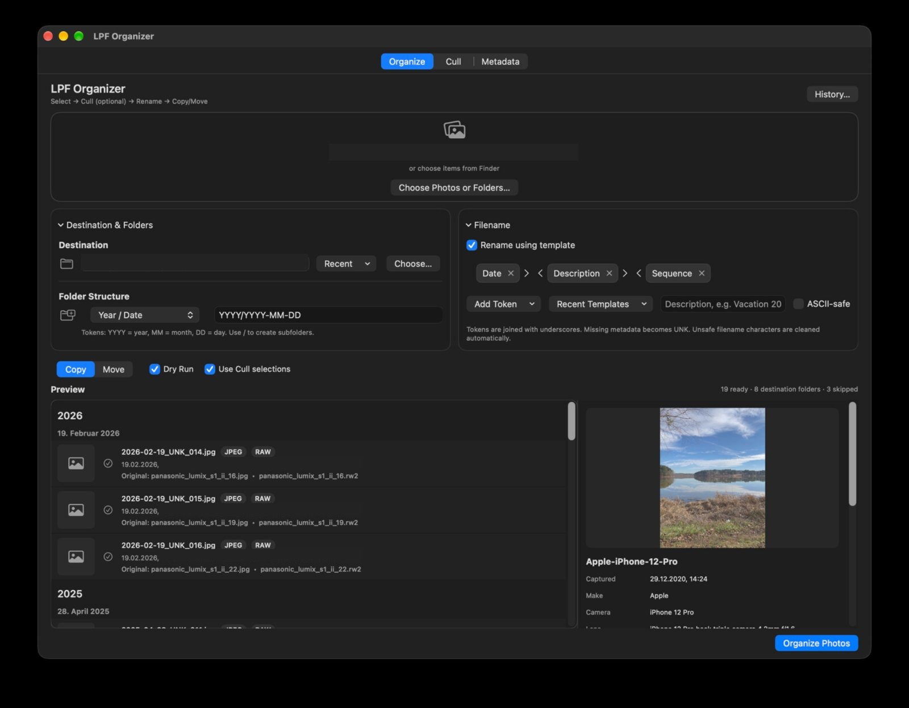
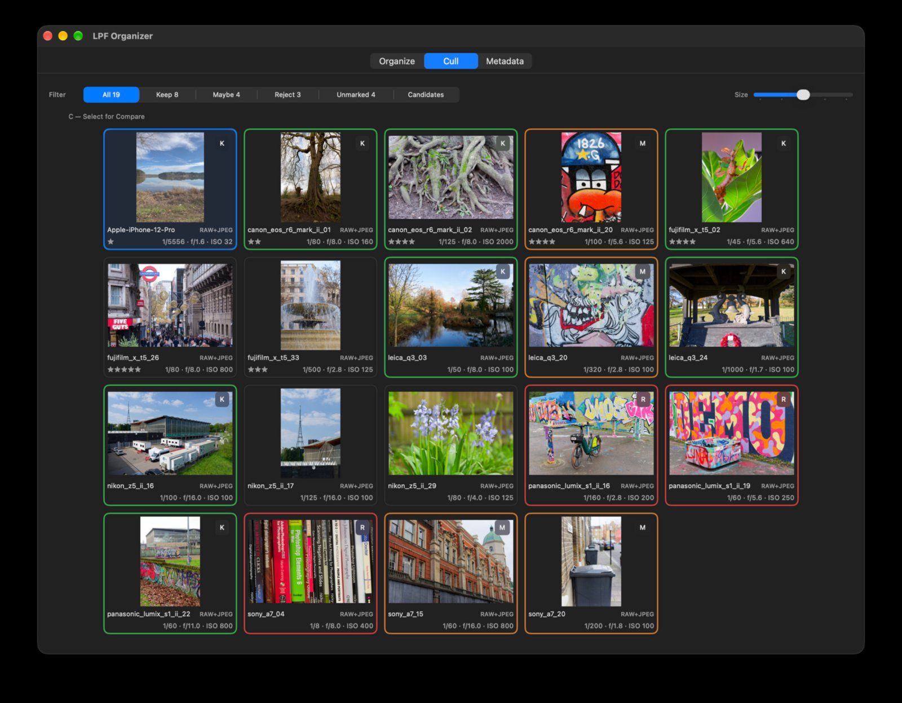
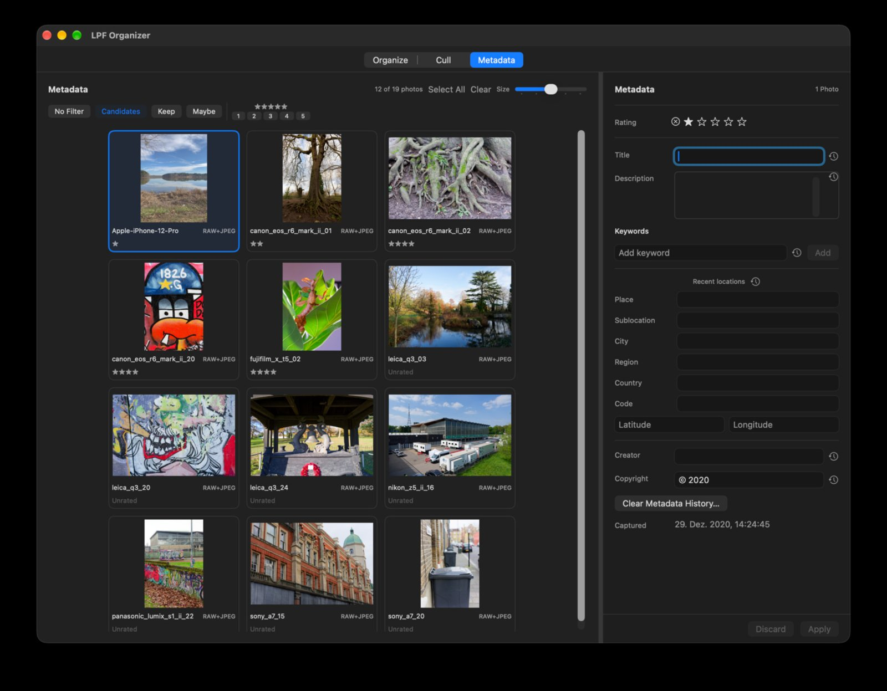

LPF Organizer · Version 1.0.0
User Guide
Your photographs. Your workflow. Use only the tools you need.
LPF Organizer works directly with your photographs and folders. Start by choosing images or a folder, then decide whether to organize them immediately or use any of the optional culling, renaming and metadata tools.
1. Quick start: just copy or move
- Open LPF Organizer and select photographs or a source folder.
- Choose a destination folder and the folder structure you prefer.
- Choose Copy or Move.
- Leave Rename using template unchecked if you want to keep existing filenames.
- Leave Use Cull selections unchecked if you want to process the photos without culling.
- Keep Dry Run enabled to inspect the preview, then disable it when you are ready to carry out the operation.
- Choose Organize Photos.
That's it. You don't have to rate, rename or describe a single photo unless you want to.
2. Organize: files and folders

Choose your source photographs or folder, and a destination. Use the folder-structure controls to choose how destination folders are created; the example above uses year and date. The preview shows the planned destinations and any skipped items.
Copy preserves the originals at the source. Move relocates them. Dry Run lets you inspect the plan before changing files. Review the preview carefully, especially when moving or renaming photographs.
LPF Organizer includes duplicate handling and operation history. Use the available history/undo controls when you need to review or reverse a supported operation.
3. Cull: choose what matters

Culling is optional. Mark photographs Keep, Maybe or Reject; use the filter bar to focus on a group. You can also assign star ratings and adjust thumbnail size. The interface includes a comparison selector for looking more closely at images.
When you want the organization step to respect your culling decisions, enable Use Cull selections in Organize. When you want to process all eligible photos regardless of culling, leave it off. Marking a photo Reject is a selection decision; it is not, by itself, an instruction to delete the original file.
4. Rename: only if you choose
In Organize, enable Rename using template to construct filenames from configurable tokens such as date, description and sequence. A preview shows the resulting names before you run the operation. Leave the option off to retain the original filenames.
Filename templates and folder structure are separate choices: you can organize photographs into folders without renaming them.
5. Metadata: describe your photographs

Select one or several photographs to edit descriptive information. Available fields include Title, Description, Keywords, Location, Creator, Copyright and Rating. The photo grid offers filters for culling decisions and star ratings, making it easier to work on a useful subset.
Metadata changes are committed with Apply; use Discard to abandon pending edits. Some fields provide recent-value history to speed up repetitive work. When editing several photographs, check which fields you intend to apply to the selection before committing.
You can use the Metadata workspace independently of copying, moving or renaming files.
6. RAW, JPEG and XMP
LPF Organizer can treat associated RAW and JPEG files as a single logical photograph. It uses XMP sidecar files for descriptive metadata rather than modifying the image pixels. Sidecars are ordinary files that can accompany photographs in a folder-based workflow.
LPF Organizer is not a RAW developer or photo editor. Use your preferred editing software for exposure, colour and other image adjustments. As with any multi-application workflow, check how your editor handles and updates XMP sidecars.
For important collections, keep a backup before bulk file operations.
7. Example: a complete workflow
- Select a folder of photographs.
- Optionally open Cull to mark your favourites and add star ratings.
- Optionally add titles, keywords or location information in Metadata.
- Return to Organize and select the destination and folder structure.
- Optionally enable filename renaming and Cull selections.
- Review the Dry Run preview, then carry out Copy or Move when satisfied.
Or skip steps 2, 3 and 5. The point is that you decide.